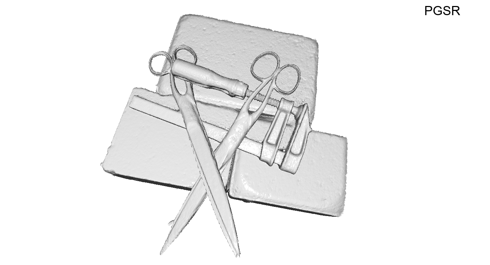

DTU


3D Gaussian Splatting (3DGS) has gained significant attention for its high-quality rendering capabilities, ultra-fast training, and inference speeds. To address this challenge, we propose Multi-View Consistency Gaussian Splatting for the domain of Robust Surface Reconstruction (\textbf{MVGSR}), which takes advantage of lightweight Gaussian models and a \textcolor{red}{heuristics-guided distractor masking} strategy for robust surface reconstruction in non-static environments. Experimental results demonstrate that MVGSR achieves competitive geometric accuracy and rendering fidelity compared to the state-of-the-art surface reconstruction algorithms.
The detailed architecture of our MVGSR Framework. Images with distractors are fed to the system that makes use of multi-view consistency Gaussian Splatting algorithm to achieve robust surface reconstruction for non-static environments.


@article{hou2025MVGSR,
title={MVGSR: Multi-View Consistency Gaussian Splatting for Robust Surface Reconstruction},
author={Chenfeng Hou and Qi Xun Yeo and Mengqi Guo and Yongxin Su and Yanyan Li and Gim Hee Lee},
booktitle={arxiv preprint arxiv:},
year={2024}
}
```